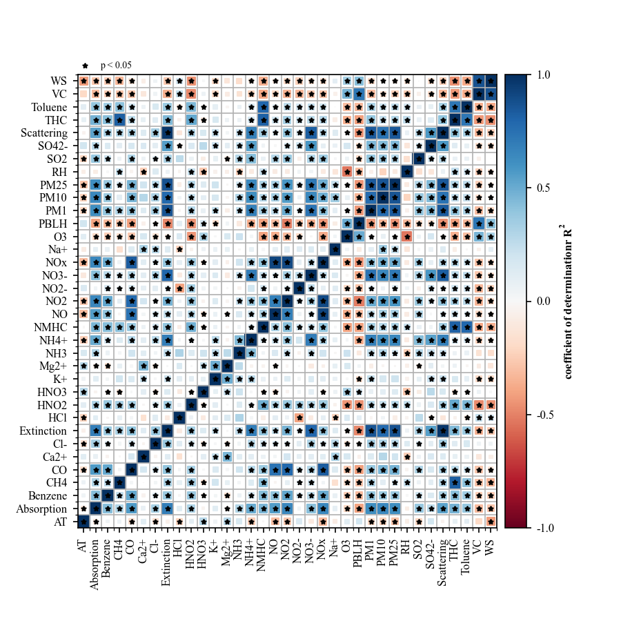
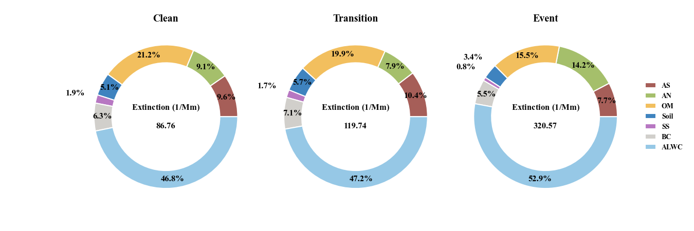
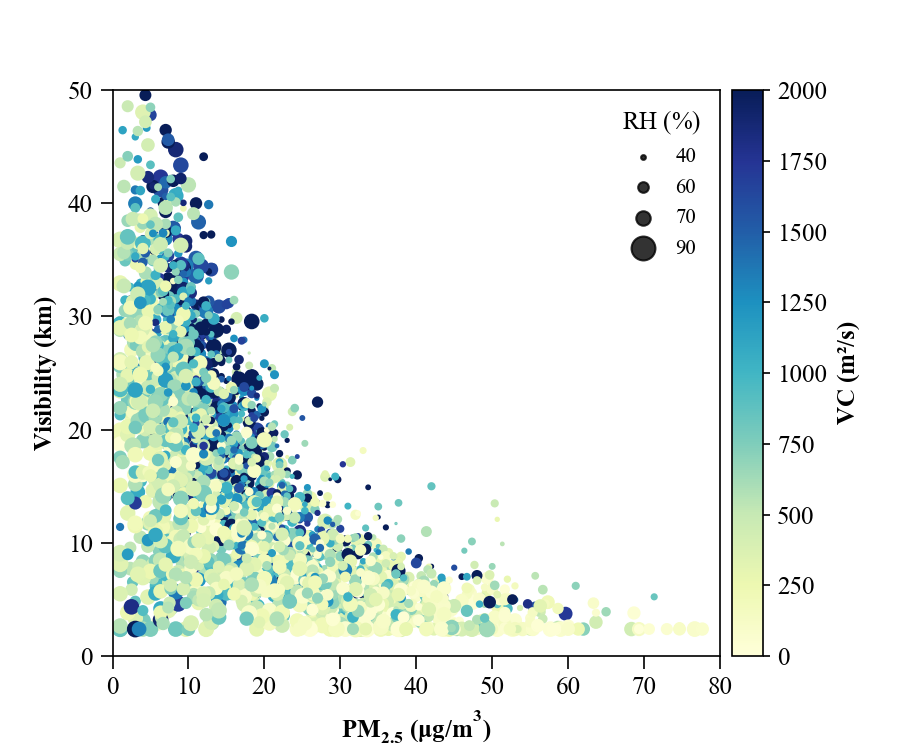

Plot Documentation
Overview
The plot module provides visualization tools for creating publication-quality plots of aerosol data. It includes various plot types commonly used in aerosol science.
Basic Usage
from AeroViz import plot
# Create a time series plot
plot.time_series(data, 'BC')
# Create a scatter plot
plot.scatter(data, 'BC', 'PM2.5')
Available Plot Types
time_series()
Create a time series plot of specified variables.
plot.time_series(
data,
variables=['BC', 'PM2.5'],
start='2024-01-01',
end='2024-12-31',
title='Time Series of BC and PM2.5'
)
scatter()
Create a scatter plot of two variables.
box()
Create a box plot of specified variables.
histogram()
Create a histogram of specified variables.
Parameters
Common Parameters
data(DataFrame): Input datavariables(list): Variables to plottitle(str): Plot titlefigsize(tuple): Figure sizestyle(str): Plot style
Time Series Parameters
start(str): Start dateend(str): End datefreq(str): Time frequency
Scatter Parameters
x(str): X-axis variabley(str): Y-axis variablecolor(str): Color variablesize(str): Size variable
Examples
Time Series with Multiple Variables
plot.time_series(
data,
variables=['BC', 'PM2.5', 'PM10'],
start='2024-01-01',
end='2024-12-31',
title='Aerosol Components Time Series'
)
Scatter Plot with Color and Size
Box Plot by Month
Notes
- All plots are customizable with various parameters
- Plots can be saved in multiple formats (PNG, PDF, etc.)
- The plot module uses matplotlib and seaborn under the hood
- Publication-quality settings are applied by default
WindRose and Conditional Bivariate Probability Function (CBPF)
from AeroViz import plot, DataBase
df = DataBase() # build default data, uers can use their own data
# wind rose
plot.meteorology.wind_rose(df, 'WS', 'WD', typ='bar')
plot.meteorology.wind_rose(df, 'WS', 'WD', 'PM2.5', typ='scatter')
plot.meteorology.CBPF(df, 'WS', 'WD', 'PM2.5')
plot.meteorology.CBPF(df, 'WS', 'WD', 'PM2.5', percentile=[75, 100])
Linear Regression
from AeroViz import plot, DataBase
df = DataBase() # build default data, uers can use their own data
# regression
plot.linear_regression(df, x='PM25', y='Extinction')
plot.linear_regression(df, x='PM25', y=['Extinction', 'Scattering', 'Absorption'])
plot.multiple_linear_regression(df, x=['AS', 'AN', 'OM', 'EC', 'SS', 'Soil'], y=['Extinction'])
plot.multiple_linear_regression(df, x=['NO', 'NO2', 'CO', 'PM1'], y=['PM25'])
Timeseries
from AeroViz import plot, DataBase
df = DataBase() # build default data, uers can use their own data
# timeseries
plot.timeseries.timeseries(df,
y=['Extinction', 'Scattering'],
color=[None, None],
style=['line', 'line'],
times=('2021-02-01', '2021-03-31'), ylim=[0, None], ylim2=[0, None], rolling=50,
inset_kws2=dict(bbox_to_anchor=(1.12, 0, 1.2, 1)))
plot.timeseries.timeseries(df, y='WS', color='WD', style='scatter', times=('2020-10-01', '2020-11-30'),
scatter_kws=dict(cmap='hsv'), cbar_kws=dict(ticks=[0, 90, 180, 270, 360]),
ylim=[0, None])
plot.timeseries.timeseries_template(df.loc['2021-02-01', '2021-03-31'])
Particle Size Distribution
[!IMPORTANT]\ The provided code of distribution suitable for SMPS and APS data in "dX/dlogdp" unit. It can be converted into surface area and volume distribution. At the same time, chemical composition data can also be used to calculate particle extinction through Mie theory.
from pathlib import Path
from AeroViz import plot
from AeroViz.tools import DataBase
df = DataBase() # build default data, uers can use their own data
PNSD = DataBase('DEFAULT_PNSD_DATA.csv')
plot.distribution.distribution.heatmap(PNSD, unit='Number')
plot.distribution.distribution.heatmap_tms(PNSD, unit='Number', freq='60d')
For some basic plot
| Three_dimension | Correlation Matrix | Mutiply Linear Regression |
|---|---|---|
 |
 | |
| Pie & Donut | Dounts | Scatter |
|  |  |
 |
PyMieScatt
| Mie_Q | Mie_MEE |
|---|---|
 |